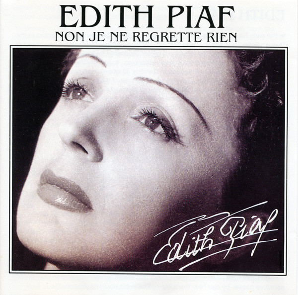
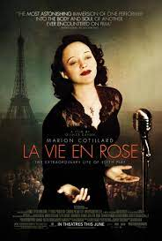
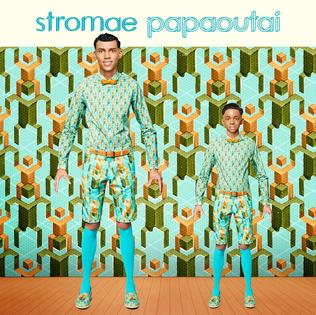

Famous/Renowned: Yes (very)
Released:1960
Singer: Edith Piaf
Meaning: A melodious, moving
opera like song on how E. Piaf

Famous/Renowned: Yes (very)
Released:1947
Singer: Edith Piaf
Meaning: A sugary, sweet
opera like song on how E. Piaf
sees life in rose-colored glasses
,to live life in love!
Genre: Traditional Pop
Impact: Huge
Highly Recommended
Extra: Tous les garçons et les filles - Françoise Hardy,
Or check out Johnny Hallyday, the father of French Rock!
Famous/Renowned: Yes
Released: 2015
Singer: Willy William
Meaning: A deep, strange
and tripping song
on how one must cherish life
, and not to waste it on your ego.
Genre: Latin Urbano, Dance, Electronic
Famous/Renowned: Yes
Released: 2014
Singer: Indila
Meaning: A void
opera pop song
that sucks you in!
Genre: Orchestral Pop
Impact: Wide
Highly Recommended (if you like this, check out Ainsi Bas La Vida & Dernière Danse!)
Famous/Renowned: Yes
Released: 2010
Singer: Stromae
Meaning: A bop
about the cycle of life
finished with a cynical crtique!
Genre: Dance/Electronic
Impact: Wide
Recommended
Extra: Fils de Joie - Stromae &

Famous/Renowned: Yes
Released: 2013
Singer: Stromae
Meaning: The singer's
personal experience
with his father and society
Genre: Synth Pop, French Urban Pop, R&B
Impact: Wide
Higly Recommended
Extra: Tous les Memes - Stromae &
Famous/Renowned: Ish
Released: 2018
Singer: Guizmo
Meaning: A flowing
rap
Genre: French Rap
Impact: Low
Higly Recommended
Extra: Solar Pleure - MC Solaar &